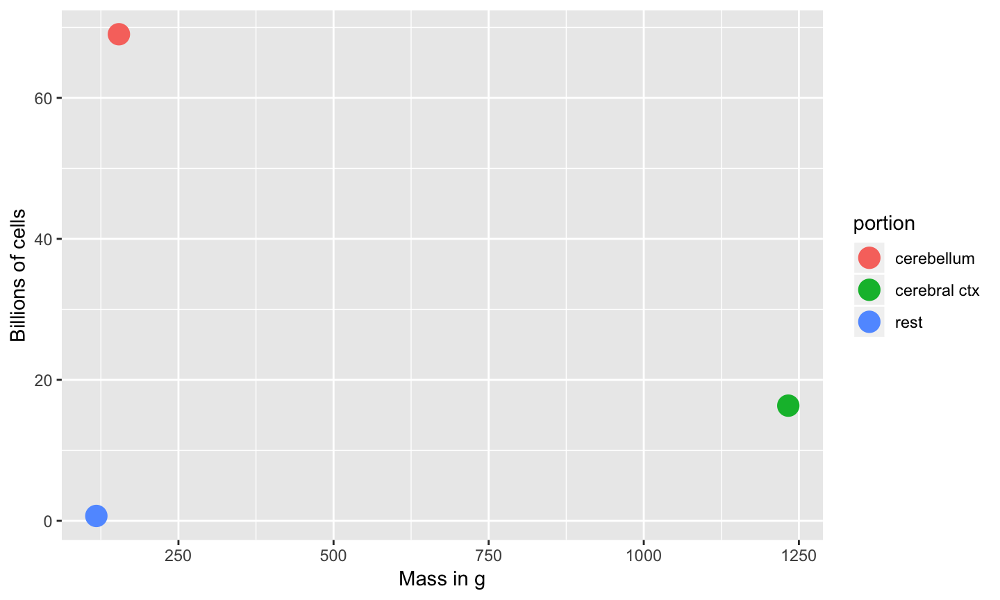
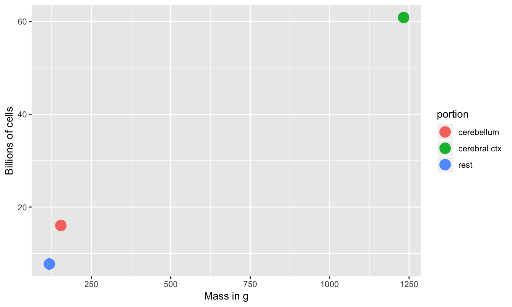

2018-09-11 15:29:47
Prelude
Announcements
- Quiz 1 Friday
- 13 questions/15 points
- Take-home, take 30 min
Today's Topics
- Wrap-up on neuroanatomy
- Cells of the nervous system
- Glia
- Neurons
Visualizing the microanatomy of the brain
How many neurons and glia?
- Old "lore": ~100 billion neurons
- New estimate (Azevedo et al., 2009):
- ~86 +/- 8 billion neurons
- 85 +/- 9 billion glia
How many neurons and glia?
"These findings challenge the common view that humans stand out from other primates in their brain composition and indicate that, with regard to numbers of neuronal and nonneuronal cells, the human brain is an isometrically scaled-up primate brain."
Mass, Neurons, Non-Neurons

Neurons by brain mass

Non-neuronal cells by brain mass

The Human Advantage

Glia (neuroglia)
- Functions
- Structural support
- Metabolic support
- Brain development
Astrocytes
- "Star-shaped"
- Most numerous cell type in CNS
- Physical and metabolic support
- Blood/brain barrier
- Ion (Ca++/K+) buffering
- Neurotransmitter (e.g., glutamate) buffering
- Regulate local blood flow
Astrocytes
- Shape brain development, synaptic plasticity
- Disruption linked to cognitive impairment, disease (Chung, Welsh, Barres, & Stevens, 2015)
Astrocytes

Myelinating cells
- Oligodendrocytes
- In brain and spinal cord (CNS)
- 1:many neurons
- Schwann cells
- In PNS
- 1:1 neuron
- Facilitate neuro-regeneration
- Mnemonics: COPS/SPOC
Oligodendrocytes

Schwann Cells

Microglia
- Phagocytosis
- Clean-up damaged, dead tissue
- Role in 'pruning' of synapses in normal development
Microglia

By GerryShaw -
Own work, CC BY-SA 3.0, Link
What makes neurons "special"?
- Long-lived (most generated b/w 3-25 weeks gestational age)
- Extended branching (dendrites and axons)
- Electrically excitable
- Connect to small #s of other cells via synapses
- Release neurotransmitters
Macrostructure of neurons
- Dendrites
- Soma
- Axons
- Terminal buttons (boutons)
Structure of neurons

Dendrites
- Majority of input to neuron
- Passive vs. active
- Spines
Dendrites

Dendritic Spines

Soma (cell body)
- Varied shapes
- Nucleus
- Chromosomes
- Organelles
- Mitochonrdria
- Smooth and Rough Endoplasmic reticulum (ER)
Soma
Axons
- Axon hillock
- Initial segment
- Nodes of Ranvier
- Axon Terminals
Axons

Synaptic bouton (terminal button)
- Synapse (~5-10K per neuron)
- Pre and postsynaptic membranes
- Synaptic cleft
- Synaptic vesicles
- Store/release neurotransmitters
- Autoreceptors & transporters
Synaptic bouton (terminal button)

Classifying neurons
- Functional role
- Input (sensory), output (motor/secretory), interneurons
- Anatomy
- Unipolar
- Bipolar
- Multipolar
Branching types

Classifying neurons
- By specific anatomy
- Pyramidal cells
- Stellate cells
- Purkinje cells
- Granule cells
Neurons by type

Morphology, physiology, gene transcription


{kind=link}
Next time
- Quiz 1 (available after class)
- Neurophysiology
References
Azevedo, F. A., Carvalho, L. R., Grinberg, L. T., Farfel, J. M., Ferretti, R. E., Leite, R. E., … others. (2009). Equal numbers of neuronal and nonneuronal cells make the human brain an isometrically scaled-up primate brain. Journal of Comparative Neurology, 513(5), 532–541. https://doi.org/10.1002/cne.21974
Boldog, E., Bakken, T. E., Hodge, R. D., Novotny, M., Aevermann, B. D., Baka, J., … Tamás, G. (2018). Transcriptomic and morphophysiological evidence for a specialized human cortical GABAergic cell type. Nature Neuroscience, 21(9), 1185–1195. https://doi.org/10.1038/s41593-018-0205-2
Chung, W.-S., Welsh, C. A., Barres, B. A., & Stevens, B. (2015). Do glia drive synaptic and cognitive impairment in disease? Nature Neuroscience, 18(11), 1539–1545. https://doi.org/10.1038/nn.4142